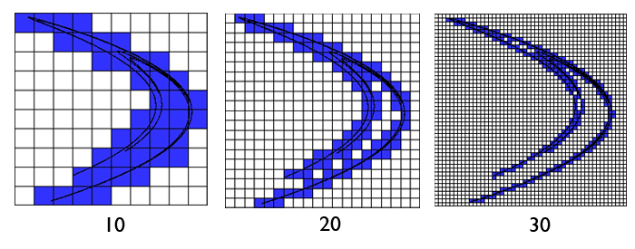
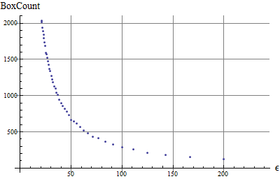
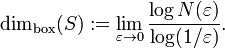

Dimension calculator
This dialog lets you calculate the fractal dimension of any fractal loaded onto wxChaos. More precisely the Minkowski-Bouligand dimension, also know as Box-Counting dimension.
You can load the pre-implemented fractals and the user script fractals. The range of the box-counting epsilon is set by a function of by list.
In rough word the Box-Counting dimension is a measure of the fractal changes when the measuring scale also changes.

In
the box-counting dimension the image is divided in sections of size
epsilon, and then we count how many boxes are filled by the fractal.
We can make successive images with different epsilon sizes. This
would give us something like this.

The
box-counting dimension is defined by
